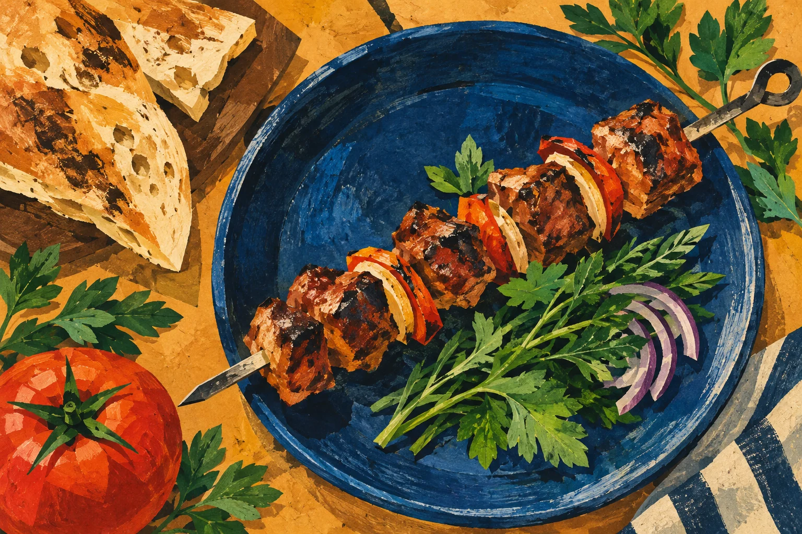

АРЦАХ
Хороший повод
собраться.

ЗАХОДИТЕ В АРЦАХ
Кухня и компания.
Кавказские, европейские
и русские блюда —
за одним столом.
ПРОСТО ВСТРЕТИТЬСЯ
Ужин начинается
с вашей компании.
Позовите друзей или соберитесь с близкими. Уточните свободный столик и выберите время встречи.
Меню, наличие блюд и текущие цены подскажет администратор. Если у гостей есть пожелания к составу блюд, обсудите их заранее.
Узнать меню и свободные столики ↗Большой день.
Близкие рядом.
Юбилей, свадьба или встреча коллектива. В «Арцахе» можно обсудить банкетный формат для вашей компании.
- Дата и количество гостей
- Зал и пожелания к рассадке
- Меню, полная стоимость и условия
УЖИН ИЛИ ОСОБЫЙ ПОВОД
Ваш повод.
Ваши близкие.
Для уютного ужина нужен свободный столик. Для банкета — время обсудить зал, рассадку и меню. Выберите свой формат и подготовьте детали разговора.
Укажите пожелания к блюдам и время встречи. Меню, стоимость и условия подтвердит администратор кафе.
Начните с вашей компании
СТОЛИКИ · МЕНЮ · БАНКЕТЫ
+7 917 870-65-74Часы работы и детали визита уточните по телефону.
Карточка в 2ГИС ↗КАК ДОБРАТЬСЯ
До встречи за столом
Лениногорск, Стадионная улица, 4А
Если карта не загрузилась, откройте маршрут по ссылке выше.